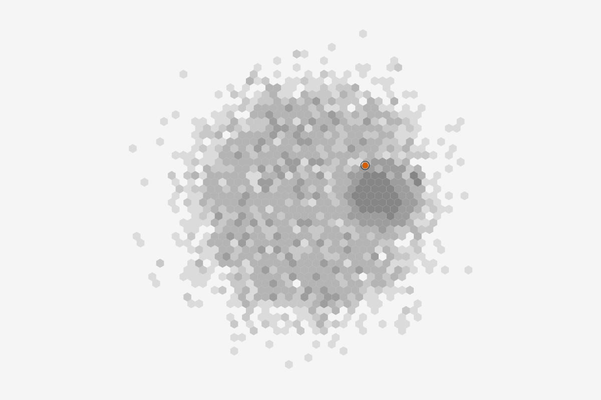
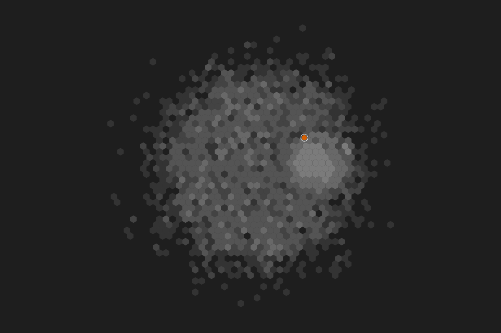

NodesEdges
Full graph: 3,000 nodes. Sorted by riskScore.
| id | kind 3 values | country | riskScore 0 to 98, sorted | flagged | total degree |
|---|---|---|---|---|---|
| ACC-233575 | personal | US | 98 | true | 8 |
| ACC-577269 | personal | BR | 97 | true | 8 |
| ACC-782213 | personal | BR | 97 | true | 7 |
| ACC-642959 | personal | NG | 96 | true | 9 |
| ACC-753261 | personal | BR | 95 | true | 12 |
| ACC-309606 | personal | PH | 93 | true | 9 |
| ACC-946224 | personal | US | 93 | true | 9 |
| ACC-242954 | personal | US | 92 | true | 9 |